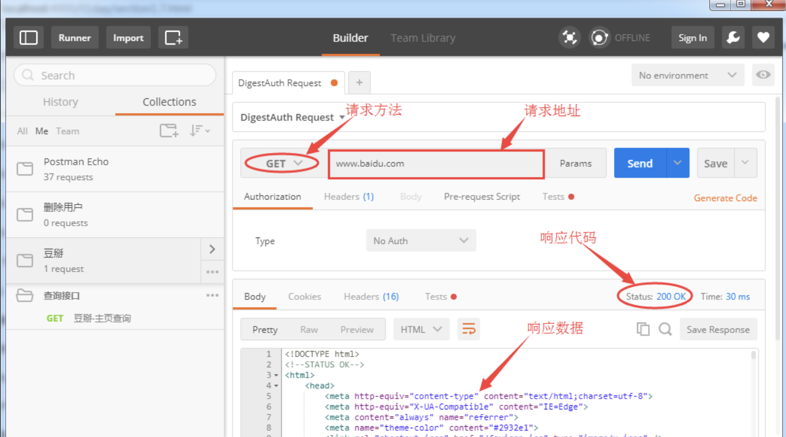
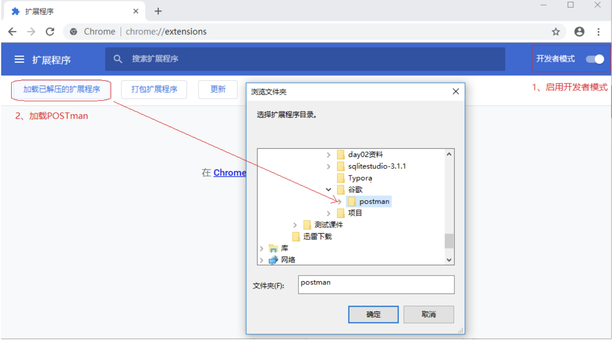
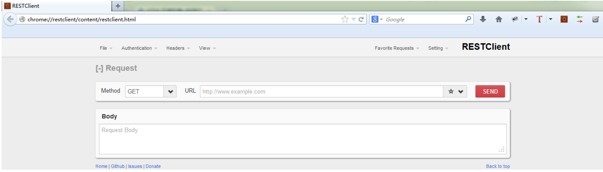
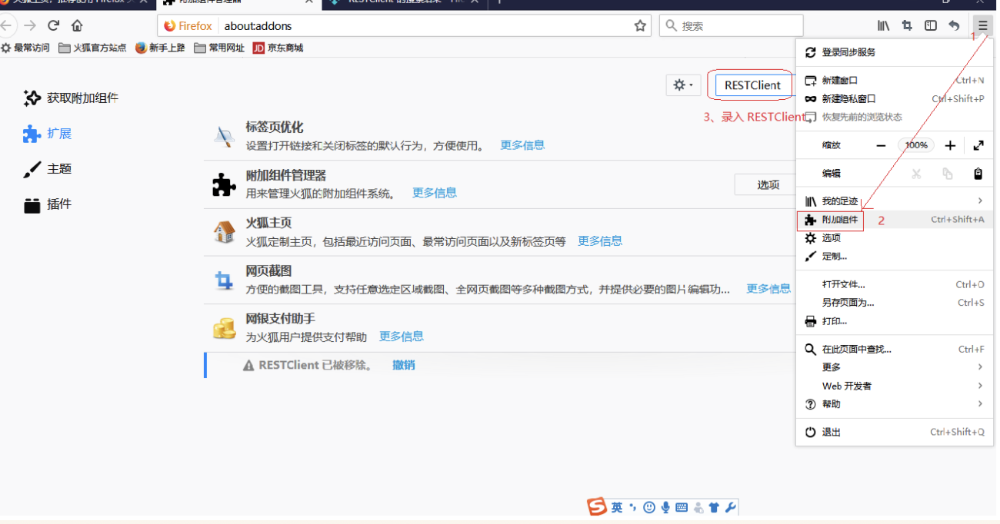
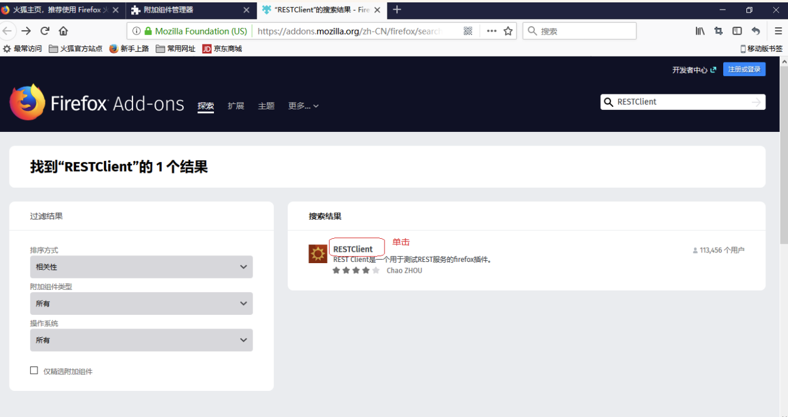
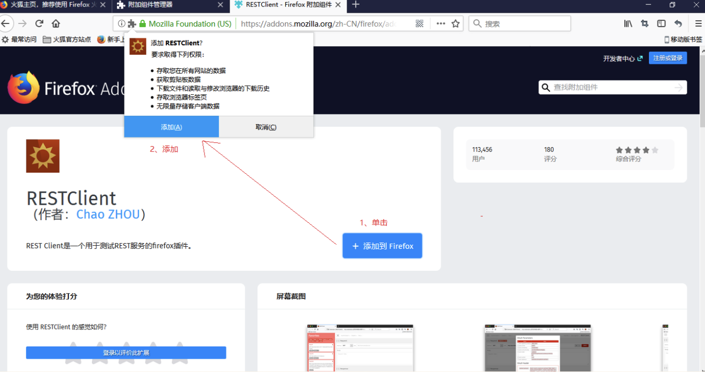

常用的测试工具
学习目标
- 熟悉并了解开发常用接口测试插件
- 快速掌握离线及在线安装插件方式
- 体验接口测试
常用的接口测试工具
- loadrunner：一款商业性能测试工具，可用来做接口测试、性能测试、压力测试等，很好很强大
- jmeter：一款开源的性能测试工具，操作简单，方便，既有jdbc request操作数据库数据，也有http request和soap request应对测试
- postman：谷歌浏览器的扩展工具，谷歌商店中选中安装，界面同poster差别不大，界面简洁
- soapui：开源测试工具，通过soap/http协议来检查、调用、实现Web Service的功能/负载/符合性测试；
- RestClient: Firefox上一款用于测试各种Web服务的插件，它可以向服务器发送各种HTTP请求（用户也可以自定义请求方式).
我们主要使用Jmeter, 简单了解Postman、RestClient
1. Postman
是google开发的一款功能强大的网页调试与发送网页HTTP请求，并能运行测试用例的的Chrome插件.

1.1 安装postman
- 安装chrome浏览器
- 安装postman插件
- 安装方式离线式/在线式(比较慢,建议离线) potman安装包
1.2 Postman安装步骤
1). 安装谷歌浏览器
2). 打开浏览器扩展页面
- chrome://extensions/
- 自定义及控制->更多工具->程序扩展
3). 勾选开发者模式

4). 加载已解压的扩展程序

1.3 Postman演示
- 请求方法（GET）
- 请求URL：http://www.sojson.com/open/api/weather/json.shtml?city=北京
1.4 结果
- 查看响应状态码
- 查看响应数据
2. RestClient
是Firefox上的插件，这款插件由国人开发，功能上支持于返回的数据高亮显示

2.1 安装环境
- 安装火狐浏览器
- 安装接口插件工具RestClient(RestClient安装包)
- 安装方式(在线)
2.2 RESTClient安装步骤
1). 安装火狐浏览器
2). 打开浏览器-附加组件
- about:addons
- Ctrl+Shift+A
- 工具菜单->附加组件
3). 搜索RESTClinet 2.0.5

4). 安装


2.3 RESTClient演示
- 请求方法（GET）
- 请求URL：http://www.weather.com.cn/data/sk/101010100.html
2.4 结果
- 查看响应状态码
- 查看响应数据
3 总结
接口测试常用工具很多,我们讲解的是比较常用的postman、restclient以及后续重点学习的jmeter.